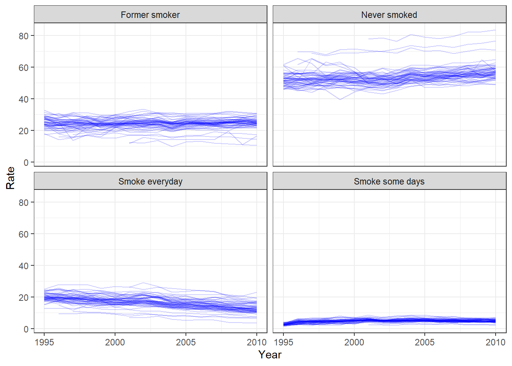

This data set is the Behavioral Risk Factor Surveillance System (CDC BRFSS) Smoking and Tobacco Use from 1995 to 2010. It includes the rate by which each state (and US territory) exhibits different smoking habits. The rates are weighted to population characteristics to allow for comparison of different population sizes. It includes variables such as “Smokes everyday”“Former Smoker”“Smokes some days” and “Never Smoked”. I chose it because it was complete and relatively clean, as well as spanned over a large amount of years. This allowed for more than 53 rows which I saw in multiple other data sets. I wanted to use something a bit larger than only having one entry per state.
A Note I commented out the code chunk to only display the data table.
Rows: 876 Columns: 7
── Column specification ────────────────────────────────────────────────────────
Delimiter: ","
chr (2): State, Location 1
dbl (5): Year, Smoke everyday, Smoke some days, Former smoker, Never smoked
ℹ Use `spec()` to retrieve the full column specification for this data.
ℹ Specify the column types or set `show_col_types = FALSE` to quiet this message.
We can see that there are two potential location variables, one which also includes latitude and longitude. I want to see if these locations are different, and separate the coordinates from the location. I’m also not sure what the coordinates mean – they may be the midpoint of the state, the capital, the data collection center, etc.
A quick Google search for the first set of coordinates in Oregon showed that they point to a potential state midpoint. This is confirmed by also looking at those for Indiana (my hometown!) and being placed in the heart of downtown Indianapolis in the center of the state and those for Georgia and being placed in Macon.
We can also see 4 entries which are only coordinates for 2009-2010 Guam and Virgin Islands, so we need to make sure these get moved appropriately to the correct collumns when they are not structured the same way as the rest of the data.
Cleaning the Data
#Separate location from coordinatestobacco_clean1<-separate(tobacco, col =`Location 1`, into =c("Location", "LatLong"), sep ="\n")
There are a couple warnings where there is no data for this field. I’m not super worried about those, I more just want to investigate and standardize the data that exists.
#account for data with different structurestobacco_clean1$LatLong<-ifelse(tobacco_clean1$Year %in%c(2009, 2010) & tobacco_clean1$State %in%c("Virgin Islands", "Guam"), tobacco_clean1$Location, tobacco_clean1$LatLong)tobacco_clean1$Location<-ifelse(tobacco_clean1$Year %in%c(2009, 2010) & tobacco_clean1$State %in%c("Virgin Islands", "Guam"), NA, tobacco_clean1$Location)#separate from each other coordinatestobacco_clean2<-separate(tobacco_clean1, col = LatLong, into =c("Lat", "Long"), sep =",")tobacco_clean2$Long<-str_sub(tobacco_clean2$Long, 1, str_length(tobacco_clean2$Long)-1)tobacco_clean2$Lat<-str_sub(tobacco_clean2$Lat, 2, -2)#look at similarities/differences in Location and Statedifferent_locs<-tobacco_clean2%>%filter(State != Location) different_locs #none!
# A tibble: 0 × 9
# … with 9 variables: Year <dbl>, State <chr>, Smoke everyday <dbl>,
# Smoke some days <dbl>, Former smoker <dbl>, Never smoked <dbl>,
# Location <chr>, Lat <chr>, Long <chr>
Great! Since there are no unusual or different inputs we can remove one of the duplicate columns
Data Table for Tobacco Use - Smoking Data for 1995-2010
This will be our dataset for analysis! It allows us to group by the “SmokeAmount” variable while having a consistent variable of interest “Rate” among all categories.
Data Analysis
Since this data covers from 1995 to 2010, I want to first look at these variables over time. Below are plots for each category across all years.
ggplot()+geom_line(aes(x=Year, y=Rate, group=State), data=tobacco_tall, alpha =0.2, color ="blue")+facet_wrap(.~SmokeAmount)+theme_bw()

This is a bit muddy of a plot, but we can see the general trends in rates between each category. It seems like among most states it is most common to not smoke. Former smoker and Smoking Everyday seem pretty comparable with smoking everyday on the decline. Finally smoking some days is the least common, but there does seem to be a very slight increase since 1995.
This is where my work ends, best of luck to Player 2.
Kelly Hatfield’s Section
Step 1: Viewing the Tobacco R data
summary(tobacco_tall)
Year State Lat Long
Min. :1995 Length:3504 Min. :13.40 Min. :-157.86
1st Qu.:1999 Class :character 1st Qu.:35.47 1st Qu.:-106.13
Median :2003 Mode :character Median :39.49 Median : -89.54
Mean :2003 Mean :39.60 Mean : -92.63
3rd Qu.:2007 3rd Qu.:43.63 3rd Qu.: -78.46
Max. :2010 Max. :64.85 Max. : 144.78
NA's :240 NA's :240
SmokeAmount Rate
Length:3504 Min. : 1.300
Class :character 1st Qu.: 7.275
Mode :character Median :21.000
Mean :24.994
3rd Qu.:34.925
Max. :83.700
Step 2: See how many years and states are represented.
table(tobacco_tall$SmokeAmount)
Former smoker Never smoked Smoke everyday Smoke some days
876 876 876 876
tobacco_tall_NS =subset(tobacco_tall, SmokeAmount =="Never smoked")tobacco_tall_NS_2000=subset(tobacco_tall_NS, Year ==2000)table(tobacco_tall_NS$State)
Alabama
16
Alaska
16
Arizona
16
Arkansas
16
California
16
Colorado
16
Connecticut
16
Delaware
16
District of Columbia
15
Florida
16
Georgia
16
Guam
7
Hawaii
15
Idaho
16
Illinois
16
Indiana
16
Iowa
16
Kansas
16
Kentucky
16
Louisiana
16
Maine
16
Maryland
16
Massachusetts
16
Michigan
16
Minnesota
16
Mississippi
16
Missouri
16
Montana
16
Nationwide (States and DC)
16
Nationwide (States, DC, and Territories)
16
Nebraska
16
Nevada
16
New Hampshire
16
New Jersey
16
New Mexico
16
New York
16
North Carolina
16
North Dakota
16
Ohio
16
Oklahoma
16
Oregon
16
Pennsylvania
16
Puerto Rico
15
Rhode Island
16
South Carolina
16
South Dakota
16
Tennessee
16
Texas
16
Utah
14
Vermont
16
Virgin Islands
10
Virginia
16
Washington
16
West Virginia
16
Wisconsin
16
Wyoming
16